소음진동기사(구) (2013-09-28 기출문제)
1과목: 소음진동개론
1. 가로 7m, 세로 3.5m의 벽면밖에서 음압레벨이 112dB이라면 15m떨어진 곳은 몇 dB인가? (단, 면음원 기준)
- 76.4dB
- 85.8dB
- 88.9dB
- 92.8dB
(정답률: 알수없음)

2. 소음의 영향으로 거리가 먼 것은?
- 말초혈관을 수축시키며, 맥박을 증가시킨다.
- 호흡깊이를 감소시키며, 호흡회수를 증가시킨다.
- 타액분비량을 감소시키며, 위액산도를 증가시킨다.
- 백혈구 수를 증가시키며, 혈중 아드레날린을 증가시킨다.
(정답률: 알수없음)
3. 지향지수가 6dB일 때 지향계수는?
- 4.60
- 4.35
- 3.98
- 3.56
(정답률: 알수없음)
4. 중심주파수 750Hz일 때 1/1옥타브밴드 분석기(정비형 필터)의 상한주파수는?
- 841Hz
- 945Hz
- 1060Hz
- 1500Hz
(정답률: 알수없음)
5. 진동의 영향에 관한 설명으로 옳은 것은?
- 4~14Hz에서 복통을 느끼고, 9~20Hz에서는 대소변을 보고 싶게 한다.
- 수직 및 수평진동이 동시에 가해지면 10배 정도의 자각 현상이 나타난다.
- 6Hz에서 머리는 가장 큰 진동을 느낀다.
- 20~30Hz부근에서 심한 공진현상을 보여 가해진 진동보다 크게 느끼고, 진동수 증가에 따라 감쇠는 급격히 감소한다.
(정답률: 알수없음)
6. 다음 중 흡음감쇠가 가장 큰 경우는?
- [주파수, Hz]:4000, [기온, °C]:-10, [상대습도, %]:50
- [주파수, Hz]:2000, [기온, °C]:0, [상대습도, %]:50
- [주파수, Hz]:1000, [기온, °C]:-10, [상대습도, %]:70
- [주파수, Hz]:500, [기온, °C]:10, [상대습도, %]:85
(정답률: 알수없음)
7. 다음 주파수 범위(Hz)중 인간의 청각에서 가장 강도가 좋은 것은?
- 20 ~ 100
- 100 ~ 500
- 500 ~ 1,000
- 2,000 ~ 5,000
(정답률: 알수없음)
8. 다음은 자유진동의 해법 중 어떤 방법에 관한 설명인가?
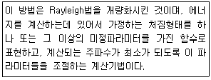
- 완전해법
- 집중파라미터 표현법
- Ritz법
- Hamilton법
(정답률: 알수없음)
9. 음파의 종류에 관한 설명으로 옳지 않은 것은?
- 정재파 : 둘 또는 그 이상의 음파의 구조적 간섭에 의해 시간적으로 일정하게 음압의 최고와 최저가 반복되는 패턴의 파
- 평면파 : 음파의 파면들이 서로 평행한 파
- 구면파 : 음원에서 진행 방향으로 큰 에너지를 방출 할 때 발생하는 파
- 발산파 : 음원으로부터 거리가 멀어질수록 더욱 넓은 면적으로 퍼져나가는 파
(정답률: 알수없음)
10. 다음은 인체의 귓구멍(외이도)를 나타낸 그림이다. 이 때 공명 기본음 주파수 대역은? (단, 음속은 340m/s 이다.)
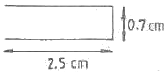
- 750 Hz
- 3400 Hz
- 6800 Hz
- 12143 Hz
(정답률: 알수없음)
11. 지반을 전파하는 파에 관한 설명으로 옳지 않은 것은?
- 지표진동 시 주로 계측되는 파는 R파이다.
- R파는 역2승법칙으로 대략 감쇠된다.
- 표면파의 전파속도는 일반적으로 횡파의 92~96% 정도이다.
- 파동에너지비율은 R파가 S파 및 P파에 비해 높다.
(정답률: 알수없음)
12. 항공기 소음의 특징에 관한 설명으로 가장 거리가 먼 것은?
- 제트엔진으로부터 기체가 고속으로 배출될 때 발생하는 소음은 기체배출속도의 제곱근에 비례하여 증가한다.
- 회전날개의 선단속도가 음속 이상일 경우 회전날개 끝에 생기는 충격파가 고정된 날개에 부딪쳐 소음을 발생시킨다.
- 회전날개에 의해 발생된 소음은 고음성분이 많으며 감각적으로 인간에게 큰 자극을 준다.
- 회전날개의 선단속도가 음속 이하일 경우는 날갯수에 회전수를 곱한 값의 정수배 순음을 발생시킨다.
(정답률: 알수없음)
13. 진동레벨 산정 시 수직보정곡선에서 주파수대역이 8 ≤ f ≤ 90Hz 일 때 보정치 물리량(m/s2)은?
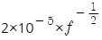
- 10-5
- 0.125×10×-5×f
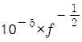
(정답률: 알수없음)
14. 청력에 관한 내용으로 옳지 않은 것은?
- 음의 대소는 음파의 진폭(음압)의 크기에 따른다.
- 음의 고저는 음파의 주파수에 따라 구분된다.
- 4분법에 의한 청력손실이 옥타브밴드 중심주파수가 500~2000Hz범위에서 5dB이상이면 난청이라 한다.
- 청력손실이란 청력이 정상인 사람의 최소 가청치와 피검자의 최소 가청치와의 비를 dB로 나타낸 것이 다.
(정답률: 알수없음)
15. 그림과 같이 질량은 1kg, 100N/m 강성을 갖는 스프링 4개가 연결된 진동계가 있다. 이 진동계의 고유진동수(Hz)는?
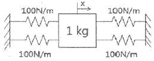
- 0.80
- 1.59
- 3.18
- 6.37
(정답률: 알수없음)
16. 실정수 200m2인 실내 중앙의 바닥 위에 설치되어 있는 소형기계의 파워레벨이 100dB 이었다. 이 기계로부터 5m 떨어진 실내의 한 점에서의 음압레벨(SPL)은?
- 74dB
- 84dB
- 94dB
- 114dB
(정답률: 알수없음)
17. 마스킹(masking)효과에 관한 설명으로 옳지 않은 것은?
- 음파의 간섭현상에 의한 것으로 저음이 고음을 잘 마스킹 한다.
- 두 음의 주파수가 서로 거의 같을 때는 맥동현상에 의해 마스킹 효과가 감소한다.
- 두 음의 주파수가 비슷할 EO는 마스킹 효과가 대단히 커진다.
- 주파수가 비슷한 두 음원이 이동시 진행방향 쪽에서는 원래 음보다 고음이 되어 마스킹 효과가 감소하는 현상을 의미한다.
(정답률: 알수없음)
18. 인체 귀의 구성요소 중 초저주파소음의 전달과 진동 에 따르는 인체의 평형을 담당하고 있는 부분은?
- 3개의 청소골
- 유스타키오관
- 세반고리관 및 전정기관
- 고막과 섬모세포
(정답률: 알수없음)
19. 아래 그림과 같이 진동하는 파의 감쇠특성으로 적합한 것은? (단, 감쇠비는 ξ이다.)
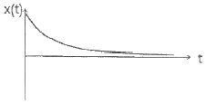
- ξ= 0
- 0 ＜ ξ ＜ 1
- 1/2＜ ξ＜ 1
- ξ＞ 1
(정답률: 알수없음)
20. 옥외의 자유공간에 설치된 무지향성 소음원의 음향파워레벨이 1⑤dB 이다. 이 소음원으로부터 20m 떨어진 곳에서의 음압레벨은?
- 68dB
- 71dB
- 84dB
- 87dB
(정답률: 알수없음)
2과목: 소음방지기술
21. 콘크리트(면적 30m2, TL=40dB)와 유리창(면적 10m2, TL=15dB)으로 구성된 벽이 있을 때 유리 창을 3m2만큼 열었다. 이 때의 총합투과손실(dB) 은?
- 11dB
- 13dB
- 15dB
- 17dB
(정답률: 알수없음)
22. 평균 흡음율이 0.3이고, 내부표면적이 500m2인 건물의 실정수는?
- 150.2m2
- 183.4m2
- 208.2m2
- 214.3m2
(정답률: 알수없음)
23. 구멍직경 8.5mm, 구멍간 상하좌우간격 22mm, 두께 15mm인 다공판을 30mm의 공기층을 두고 설치할 경우 공명주파수는 약 얼마인가? (단, 구멍의 크기가 음의 파장에 비해 매우 적고, 음속은 340m/s 이다.)
- 561Hz
- 725Hz
- 916Hz
- 1010Hz
(정답률: 알수없음)
24. 균질의 단일벽 두께를 2배로 할 경우 일치효과의 한계주파수는 어떻게 변화 되겠는가? (단, 기타 조건은 일정하다.)
- 처음의 1/4
- 처음의 1/2
- 처음의 2배
- 처음의 4배
(정답률: 알수없음)
25. 직관 흡음 덕트형 소음기에 관한 설명으로 가장 거리가 먼 것은?
- 통과 유속은 50m/s 이하로 하는 것이 좋다.
- 감음의 특성은 중ㆍ고음역에서 좋다.
- 덕트의 내경이 대상음의 파장보다 큰 경우는 cell형이나 splitter형으로 하여 목적주파수를 감음시킨다.
- 덕트의 최단 횡단길이는 고주파 beam을 방해하는 크기
(정답률: 알수없음)
26. 어떤 공장내에 아래의 조건을 만족하는 A실과 B실이있다. 잔향시간 측정방법에 의한 A실의 잔향시간을3초라 할 때, B실의 잔향시간은?
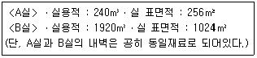
- 2초
- 3초
- 4초
- 6초
(정답률: 알수없음)
27. 1.0m×2.5m 출입문의 투과손실을 25dB 이상으로설계하려고 한다. 출입문 주위 틈새의 면적은 몇m2이하로 해야 되는가? (단, 틈새 이외의 벽체부분은 차음성능이 충분히 크다고 가정한다.)
- 5.94×10-3
- 6.94×10-3
- 7.94×10-3
- 8.94×10-3
(정답률: 알수없음)
28. 파이프 반경이 0.5m인 파이프 벽에서 전파되는 종파의 전파속도가 5326m/sec인 경우 파이프의 링 주파수는?
- 1451.63Hz
- 1591.55Hz
- 1695.32Hz
- 1845.97Hz
(정답률: 알수없음)
29. 벽체의 한쪽 면은 실내, 다른 한쪽 면은 실외에 접한 경우 벽체의 투과손실(TL)과 벽체를 중심으로 한 현장에서 실내ㆍ외간 음압레벨 차(NR, 차음도)와의실용관계식으로 가장 적합한 것은?
- TL = NR – 3 dB
- TL = NR – 6 dB
- TL = NR – 9 dB
- TL = NR – 12 dB
(정답률: 알수없음)
30. 면밀도가 각각 100kg/m2, 150kg/m2인 중공이중 벽과 면밀도가 250kg/m2인 단일벽의 투과손실이 25Hz에서 일치한다고 할 때, 이중벽의 공기층 두께 는 실용식 사용시 얼마가 되겠는가?
- 약 7cm
- 약 10cm
- 약 19cm
- 약 26cm
(정답률: 알수없음)
31. 음향투과등급(sound transmission class : STC)은 1/3옥타브대역으로 측정한 차음자재의 투과손실을 나타낸 것인데, 다음 중 음향투과등급을 평가하는 방법으로 옳지 않은 것은?
- 음향투과등급은 기준곡선을 상하로 조정하여 결정한다.
- 기준곡선 밑의 모든 주파수 대역별 투과손실과 기준곡선값의 차의 산술평균이 2dB이내가 되도록 한다.
- 단 하나의 투과손실값도 기준곡선 밑으로 5dB을 초과해서는 안된다.
- 음향투과등급은 기준곡선과의 조정을 거친 후 500Hz를 지나는 STC곡선의 값을 판독하면 된다.
(정답률: 알수없음)
32. 반무한 방음벽의 회절감쇠치는 15dB, 투과손실치는 20dB,일 때, 이 방음벽에 의한 삽입손실치는? (단, 음원과 수음점이 지상으로부터 약간 높은 위치 에 있다.)
- 11.5dB
- 13.8dB
- 15.0dB
- 20.0dB
(정답률: 알수없음)
33. 팽창형 소음기의 입구 및 팽창부의 직경이 각각 55cm, 125cm일 경우 기대할 수 있는 최대투과손실은?
- 약 2dB
- 약 5dB
- 약 9dB
- 약 15dB
(정답률: 알수없음)
34. 단일벽의 차음특성 커브에서 질량제어영역의 기울기특성으로 옳은 것은?
- 투과손실이 2dB/0ctave 증가
- 투과손실이 3dB/0ctave 증가
- 투과손실이 4dB/0ctave 증가
- 투과손실이 6dB/0ctave 증가
(정답률: 알수없음)
35. 소음을 저감시키기 위해 아래 그림과 같은 흡음챔버를 설계하고자 한다. 챔버 내의 전체 표면적이 20m2이고, 챔버 내부를 평균흡음율이 0.53인 흠음재로 흡음처리 하였다. 흡음챔버의 규격 등이 다음과 같을 때 이 흡음챔버에 의한 소음감쇠치는 몇 dB로 예상되는가? (단, 챔버출구의 단면적 : 0.5m2, 출구 – 입구사이의 경사길이(d) : 5m, 출구 – 입구사이의 각도( Ɵ ): 30° )
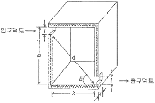
- 약 10dB
- 약 13dB
- 약 16dB
- 약 19dB
(정답률: 알수없음)
36. 실내의 흡음성능을 높이기 위한 흡음재료 선택 및 사용에 관한 설명으로 가장 거리가 먼 것은?
- 다공질형 흡음재는 비산되기 쉬우므로 통기가 되지 않는 두꺼운 직물로 피복하는 것이 좋다.
- 전체 내벽에 분산하여 부착하는 것이 흡음력을 증가시키고 반사음을 확산시킨다.
- 다공질 재료의 표면을 도장하면 고음역에서 흡음율이 떨어진다.
- 전면을 못으로 시공하는 것이 접착제로 부착하는 것보다 좋다.
(정답률: 알수없음)
37. 고음역의 중공이중벽 통과주파수대역에서 투과손실이 최대가 되기 위한 주파수(f)는? (단, c는 음속, d는 공기층의 두께, n은 정의 정수 이다.)
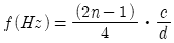
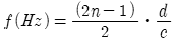
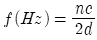
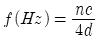
(정답률: 알수없음)
38. 다음 중 고체음에 대한 방지대책으로 거리가 먼 것은?
- 방사면의 축소
- 가진력 억제
- 공명 방지
- 밸브류 다단화
(정답률: 알수없음)
39. 한 근로자가 서로 다른 3장소에서 작업하고 있다. 88dB(A) 장소에서 2시간, 92dB(A) 장소에서 3시 간 작업을 하였으며, 3시간 동안은 소음에 폭로되지 않은 장소에서 작업했다면 소음폭로평가(NER) 는? (단, 88dB(A) 에서는 6시간, 92dB(A)에서는 6시 간의 폭로 시간이 허용된다.)
- 1/3
- 2/3
- 3/5
- 5/6
(정답률: 알수없음)
40. 블록벽, 유리창, 출입문, 문틈으로 구성된 벽체가 있다. 벽체 구성부의 면적과 투과율은 아래표와 같을 때 출입문이 열리기 전과 완전히 열린 후 총합투과손실의 차이(dB)는?
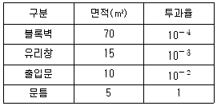
- 0
- 2.7dB
- 4.7dB
- 8.7dB
(정답률: 알수없음)
3과목: 소음진동 공정시험 기준
41. 다음 중 배경소음에 해당하는 것은?
- 정상조업중인 공장의 야간 소음도
- 소음발생원을 전부가동시킨 상태에서 측정한 소음도
- 공장의 가동을 중지한 상태에서 측정한 소음도
- 대상공장의 주ㆍ야간 소음도의 차
(정답률: 알수없음)
42. 발파소음 평가 시 대상소음도에 시간대별 보정발파횟수에 따른 보정량을 보정하여야 한다. 시간대별 보정발파횟수가 8회일 경우 보정량은 얼마인가?
- 3dB
- 7dB
- 9dB
- 11dB
(정답률: 알수없음)
43. 다음 소음계의 기본 구성도 중 각 부분의 명칭으로 가장 적합한 것은? (단,
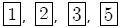
순이며, 4 교정장치, 6 동특 성 조절기, 7 출력단자, 8 지시계기 이다.)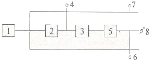
- 마이크로폰, 증폭기, 레벨레인지변환기, 청감보정회로
- 마이크로폰, 청감보정회로, 증폭기, 레벨레인지변환기
- 마이크로폰, 레벨레인지변환기, 증폭기, 청감보정회로
- 마이크로폰, 청감보정회로, 레벨레인지변환기, 증폭기
(정답률: 알수없음)
44. 항공기소음의 소음한도 측정조건으로 가장 거리가 먼 것은?
- 상시측정용 옥외마이크로폰의 경우 풍속이 5m/sec를 초과할 때에는 측정하여서는 안된다.
- 손으로 소음계를 잡고 측정할 경우 소음계는 측정자의 몸으로부터 0.5m 이상 떨어져야 한다.
- 풍속이 2m/sec 이상으로 측정치에 영향을 줄 우려가 있을 때에는 반드시 마이크로폰에 방풍망을 부착하여야 한다.
- 측정자는 비행경로에 수직하여 위치하여야 한다.
(정답률: 알수없음)
45. 규제기준 중 발파진동측정에 관한 사항으로 옳지 않은 것은?
- 측정진동레벨은 발파진동이 지속되는 기간 동안에, 배경 진동레벨은 대상진동(발파진동)이 없을 때 측정한다.
- 진동레벨계만으로 측정하는 경우에는 최고진동레벨이고정(Hold)되지 않는 것으로 한다.
- 진동레벨의 계산과정에서는 소수점 첫째자리를 유효숫자로 하고, 평가진동레벨(최종값)은 소수점 첫째자리에서 반올림한다.
- 진동레벨계의 레벨레인지 변환기는 측정지점의 진동레벨을 예비조사한 후 적절하게 고정시켜야 한다.
(정답률: 알수없음)
46. 다음 중 소음 측정기의 청감 보정회로를 C 특성에 놓고 측정한 결과치가 A 특성에 놓고 측정한 결과치보다 클 경우 소음의 주된 음역은?
- 저주파역
- 중주파역
- 고주파역
- 광대역
(정답률: 알수없음)
47. 환경기준 중 소음측정방법에 관한 사항으로 옳지 않은 것은?
- 도로변지역의 범위는 도로단으로부터 차선수 × 15m로 한다.
- 사용 소음계는 KS C IEC61672-1에 정한 클래스 2의 소음계 또는 동등 이상의 성능을 가진 것이어야한다.
- 옥외측정을 원칙으로 한다.
- 일반지역의 경우에는 가능한 한 측정점 반경 3.5m이내에 장애물(담, 건물, 기타 반사성 구조물 등)이 없는 지점의 지면 위 1.2 ~ 1.5m를 측정점으로 한다.
(정답률: 알수없음)
48. 소음ㆍ진동 공정시험기준상 진동에 관한 총칙 중 진동레벨계의 지시치는 다음 중 어떤 값인가?
- 실효치
- 평균치
- 최대치
- peak to peak 치
(정답률: 알수없음)
49. 항공기소음한도 측정결과 일일 단위의 WECPNL이 86이다. 일일 평균최고소음도가 93dB(A)일 때, 1 일간 항공기의 등가통과횟수는?
- 100회
- 110회
- 120회
- 130회
(정답률: 알수없음)
50. 압전형 진동픽업의 특징에 관한 설명으로 옳지 않은 것은? (단, 동전형 진동픽업과 비교)
- 온도, 습도 등 환경조건의 영향을 받는다.
- 소형 경량이며, 중고주파대역 (10kHz 이하)의 가속도측정에 적합하다.
- 고유진동수가 낮고(보통 10~20kHz), 감도가 안정적이다.
- 픽업의 출력임피던스가 크다.
(정답률: 알수없음)
51. 항공기소음한도 측정을 위한 소음계의 청감보정 회로 및 동특성으로 옳은 것은?
- 청감보정회로 A특성, 동특성 느림(Slow)
- 청감보정회로 A특성, 동특성 빠름(Fast)
- 청감보정회로 C특성, 동특성 느림(Slow)
- 청감보정회로 C특성, 동특성 빠름(Fast)
(정답률: 알수없음)
52. 항공기소음을 소음도 기록기를 사용할 경우에 1일 단위의 WECPNL을 구하는 공식에서 1일간 항공기의등가통과횟수인 N을 구하는 식으로 옳은 것은? (단, N1 : 0시에서 07시까지의 비행횟수, N2 : 07시에서 19시까지의 비행횟수, N3 : 19시에서 22시까지의 비행횟수, N4 : 22시에서 24시까지의 비행횟수)
- N = N2 + 3N3 + 10(N1 + N4)
- N = N2 + 3N3 + 10(N1 + 2N4)
- N = 2N2 + 4N3 + 10(N1 + N4)
- N = 2N2 + 4N3 + 10(N1 + N4 + N3)
(정답률: 알수없음)
53. 소음ㆍ진동 공정시험기준에 사용되는 용어의 정의로 옳지 않은 것은?
- 충격음은 폭발음, 타격음과 같이 극히 짧은 시간동안에 발생하는 높은 세기의 음을 말한다.
- 지시치는 계기나 기록지 상에서 판독한 소음도로서 실효치(rms값)를 말한다.
- 반사음은 한 매질중의 음파가 다른 매질의 경계면에 입사한 후 진행방향을 변경하여 본래의 매질 중으로 되돌아오는 음을 말한다.
- 변동소음은 시간에 따라 소음도 변화폭이 작은 소음을 말한다.
(정답률: 알수없음)
54. 다음 중 마이크로폰을 소음계와 분리시켜 소음을 측정할 때 마이크로폰의 지지장치로 사용하거나 소음계를 고정할 때 사용하는 장치는?
- calibration network calibrator
- fast-slow switch
- tripod
- meter
(정답률: 알수없음)
55. 다음 중 공장진동 측정자료 평가표 서식에 기재되어야 하는 사항으로 거리가 먼 것은?
- 측정 대상업소 소재지
- 진동레벨계 명칭
- 지면조건
- 충격진동 발생시간(h)
(정답률: 알수없음)
56. 다음은 소음계 교정장치의 성능기준이다. ( ) 안에 가장 적합한 것은?
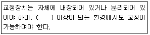
- 30dB(A)
- 50dB(A)
- 60dB(A)
- 80dB(A)
(정답률: 알수없음)
57. 소음의 환경기준 측정 시 밤 시간대(22:00~06:00)에는 낮 시간대에 측정한 측정지점에서 몇 시간 간격으로 몇 회 이상 측정하여 산술평균한 값을 측정소음도로 하는가?
- 4시간 간격, 2회 이상
- 4시간 간격, 4회 이상
- 2시간 간격, 2회 이상
- 2시간 간격, 4회 이상
(정답률: 알수없음)
58. 진동레벨계의 성능기준으로 옳지 않은 것은?
- 측정가능 주파수 범위는 1~90Hz 이상이어야 한다.
- 측정가능 진동레벨의 범위는 45~120dB 이상이어야 한다.
- 진동픽업의 횡감도는 규정주파수에서 수감축 감도에대한 차이가 15dB 이상이어야 한다.(연직특성)
- 레벨레인지 변환기가 있는 기기에 있어서 레벨레인지 변환기의 전환오차가 1dB 이내이어야 한다.
(정답률: 알수없음)
59. 진동배출허용기준 측정 시 진동픽업 설치장소로 부적당한 곳은?
- 복잡한 반사, 회절현상이 없는 장소
- 경사지지 않고, 완충물이 충분히 있는 장소
- 단단히 굳고, 요철이 없는 장소
- 수평면을 충분히 확보할 수 있는 장소
(정답률: 알수없음)
60. 다음은 발파진동 측정과 관련한 배경진동 보정에 관한 기준이다. ( )안에 적합한 것은?
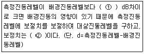
- ① 2~20, ② - 10log (1 - 10-0.1d)
- ① 2~20, ② - 10log (1 + 10-0.1d)
- ① 3.0~9.9, ② - 10log (1 - 10-0.1d)
- ① 3.0~9.9, ② - 10log (1 + 10-0.1d)
(정답률: 알수없음)
4과목: 진동방지기술
61. 불균형 질량 1kg이 반지름 0.2m의 원주상을 매분600회로 회전하는 경우 가진력의 최대치는?
- 약 395N
- 약 790N
- 약 1185N
- 약 1850N
(정답률: 알수없음)
62. 8개의 임펠러를 가지는 원심펌프가 1000rpm으로 회전하고 있다. 펌프 출구에서 생길 수 있는 물의 압력변화의 주기로 옳은 것은?
- 0.001sec
- 0.0⑤sec
- 0.0075sec
- 0.010sec
(정답률: 알수없음)
63. 가진력을 기계회전부의 질량불균형에 의한 가진력, 기계의 왕복운동에 의한 가진력, 충격에 의한 가진력으로 분류할 때, 다음 중 주로 충격가진력에 의해 진동이 발생하는 것은?
- 펌프
- 송풍기
- 유도전동기
- 단조기
(정답률: 알수없음)
64. 공기 스프링의 특성으로 거리가 먼 것은?
- 설계시에는 스프링 높이, 내하력, 스프링 정수를 각기독립적으로 선정할 수 있다.
- 금속스프링으로 비교적 용이하게 얻어지는 고유진동수 1.5Hz이상의 범위에서는 타종 스프링에 비해 비싼 편이다.
- 기계의 지지장치에 사용할 경우 스프링에 허용되는 동변위가 극히 큰 경우가 많아 다른 댐퍼가 불필요한 경우가 많다.
- 구조에 의해 설계상의 제약은 있으나 1개의 스프링으로 동시에 횡강성도 이용할 수 있다.
(정답률: 알수없음)
65. 어떤 물체의 운동변위가
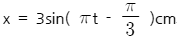
로 표시될 때의 주기는?- 0.5
- 1초
- 2초
- 4초
(정답률: 알수없음)
66.
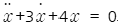
으로 진동하는 진동계에서 감쇠고유진동수(Hz)는?- 0.21
- 0.75
- 7.12
- 12.6
(정답률: 알수없음)
67. 중량 19N, 스프링정수 20N/cm, 감쇠계수가 0.1Nㆍs/cm인 자유진동계의 감쇠비는?
- 약 0.04
- 약 0.06
- 약 0.08
- 약 0.1
(정답률: 알수없음)
68. 방진재에 대한 다음 설명 중 옳지 않은 것은?
- 판스프링, 벨트, 스폰지 등도 가벼운 수진체의 방진등에 이용할 수 있다.
- 공기스프링을 기계의 지지장치에 사용할 경우 스프링에 허용되는 동변위가 극히 작은 경우가 많으므로 내장하는 공기감쇠력으로 충분하지 않은 경우가 많다.
- 코일 스프링은 자신이 저항성분을 가지고 있으므로 별도의 제동장치는 불필요하다.
- 여러 형태의 고무를 금속의 판이나 관 등 사이에 끼워서 견고하게 고착시킨 것이 방진고무이다.
(정답률: 알수없음)
69. 주기가 0.25s, 가속도 진폭이 0.1m/s2인 진동의 속도진폭(cm/s)은?
- 0.32
- 0.40
- 0.48
- 0.80
(정답률: 알수없음)
70. 방진고무의 특성으로 옳지 않은 것은?
- 내유성, 내후성 등의 내환경성에 대해서는 일반적으로 금속스프링에 비해 떨어진다.
- 고주파 영역에 있어서 고체음 절연성능이 있다.
- 내유성을 필요로 할 때에는 합성고무보다는 천연고무를 선정해야 한다.
- 서어징이 잘 발생하지 않는다.
(정답률: 알수없음)
71. 다음 중 항상 전달력이 외력보다 큰 경우는? (단, f:강제진동수, fn:고유진동수)
- f/fn＞√2
- f/fn＜√2
- f/fn=√2
- f/fn=1
(정답률: 알수없음)
72. 감쇠가 없는 스프링-질량 진동계에서 진동전달율은 0.9였다. 스프링을 그대로 두고 질량만을 바꾸어 진동전달율을 0.2로 개선하고자 한다. 바꾼 질량은 처음 질량의 약 몇 배인가?
- 1.6배
- 2.0배
- 2.2배
- 2.8배
(정답률: 알수없음)
73. 방진대책을 발생원대책, 전파경로대책, 수진측대책으로 분류했을 때, 다음 중 전파경로대책에 해당하는 것은?
- 기초중량을 부가 및 경감시킨다.
- 수진점 근방에 방진구를 판다.
- 수진측의 강성을 변경시킨다.
- 가진력을 감쇠시킨다.
(정답률: 알수없음)
74. 다음 중 동적흡진에 대한 설명으로 가장 적합한 것은?
- 불평형 질량을 부가하여 회전진동을 억제시킨다.
- 본 기계 외에 부가질량을 스프링으로 지지하여 진동저감한다.
- 동적배율이 큰 방진고무를 사용하여 탄성지지한다.
- 점탄성 재질을 이용하여 진동변위를 저감시킨다.
(정답률: 알수없음)
75. 그림과 같이 길이 L인 실 끝에 달려 있는 질량 m인단진자가 작은 진폭으로 운동할 때의 주기는? (단, g는 중력가속도이다.)
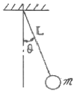
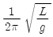
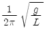
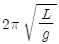
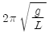
(정답률: 알수없음)
76. 무게가 70N인 냉장고 유닛이 600rpm으로 작동하고 있다. 이 때 4개의 같은 스프링으로 병렬로 냉장고 유닛을 지지한다면 전달율이 10%가 되게 하기위한 스프링의 1개당 스프링정수는? (단, 감쇠는 무시)
- 3.2N/cm
- 6.4N/cm
- 9.6N/cm
- 12.8N/cm
(정답률: 알수없음)
77. 감쇠에 관한 설명으로 옳지 않은 것은?
- 진동에 의한 기계에너지를 열에너지로 변환시키는 기능이다.
- 질량의 진동속도에 대한 스프링의 저항력의 비이다.
- 하중에 대해 원상태로 복원시키려는 힘이다.
- 충격 시의 진동을 감소시킨다.
(정답률: 알수없음)
78. 비감쇠 강제진동에서 전달율(transmissibility)을 바르게 표시한 식은?
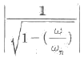
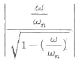
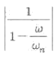
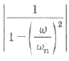
(정답률: 알수없음)
79.
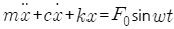
의 운동방정식을 만족시키는 진동은 다음 중 어느 진동에 해당하는가?- 비감쇠진동
- 강제진동
- 자유진동
- 마찰진동
(정답률: 알수없음)
80. 단조기가 있는 기계가공 공장(진동원)과 전자부품 공장(목표지점)이 인접해 있으며, 단조기로부터의 충격이 지반진동으로 전달되어 전자부품의 불량률이 높아 전자부품 공장 측에서 단조기에 의한 진동레벨을 5dB낮추고자 한다면 몇 m를 움직여야 하는가? (단, 단조기와 전자부품 공장과의 거리는 20m, 지반 전파의 감쇠정수는 0.03으로 계측되었으며, 주로 전파되는 파는 표면파로 가정한다.)
- 3
- 7
- 12
- 24
(정답률: 알수없음)
5과목: 소음진동 관계 법규
81. 소음진동관리법규상 농림지역의 야간 시간대의 철도교통 진동의 한도기준으로 옳은 것은?
- 60dB(V)
- 65dB(V)
- 70dB(V)
- 75dB(V)
(정답률: 알수없음)
82. 소음진동관리법상 용어의 정의로 옳지 않은 것은?
- “공장”이란 「 도시계획법 」 에 따라 결정된 공항시설안의 항공기 정비공장과 「 산업집적활성화 및 공장설립에 관한 법률 」 에 따른 공장을 말한다.
- “교통기관”이란 항공기와 선박을 제외한 기차ㆍ자동차ㆍ전차ㆍ도로 및 철도 등을 말한다.
- “소음발생건설기계”란 건설공사에 사용하는 기계 중 소음이 발생하는 기계로서 환경부령으로 정하는 것 을 말한다.
- “방진시설”이란 소음ㆍ진동배출시설이 아닌 물체로부터 발생하는 진동을 없애거나 줄이는 시설로서 환경부령으로 정하는 것을 말한다.
(정답률: 알수없음)
83. 방음벽의 성능 및 설치기준에 의거 방음벽의 성능평가 시 “구조”에 대한 세부검토항목으로 가장 거리가 먼 것은?
- 풍하중
- 시공계획서
- 기초공법
- 통로설치여부
(정답률: 알수없음)
84. 소음진동관리법규상 공사장 방음시설 설치기준 중 방음벽시설기준으로 옳은 것은?
- 방음벽시설 전후의 소음도 차이(삽입손실)는 최소 5dB이상 되어야 하며, 높이는 1.5m이상 되어야 한 다.
- 방음벽시설 전후의 소음도 차이(삽입손실)는 최소 5dB이상 되어야 하며, 높이는 3m이상 되어야 한 다.
- 방음벽시설 전후의 소음도 차이(삽입손실)는 최소 7dB이상 되어야 하며, 높이는 1.5m이상 되어야 한 다.
- 방음벽시설 전후의 소음도 차이(삽입손실)는 최소 7dB이상 되어야 하며, 높이는 3m이상 되어야 한 다.
(정답률: 알수없음)
85. 소음진동관립법규상 운행자동차 중 경자동차의 배기 소음허용기준으로 적절한 것은? (단, 2006년 1월 1일 이후에 제작되는 자동차)
- 100dB(A)이하
- 1⑤dB(A)이하
- 110dB(A)이하
- 112dB(A)이하
(정답률: 알수없음)
86. 소음진동관리법규상 배출허용기준에 맞는지를 확인하기 위하여 소음진동 배출시설과 방지시설에 대하여검사할 수 있도록 지정된 기관이라 볼 수 없는 것 은?
- 국립환경과학원
- 특별시ㆍ광역시ㆍ도ㆍ특별자치도의 보건환경연구원
- 유역환경청
- 환경보전협회
(정답률: 알수없음)
87. 소음진동관리법규상 공장소음 배출허용기준에서 다음지역과 시간대 중 배출허용기준치가 가장 엄격한 것은?
- 도시지역 중 녹지지역의 낮시간대
- 도시지역 중 일반주거지역의 저녁시간대
- 농림지역의 밤시간대
- 도시지역 중 전용주거지역의 저녁시간대
(정답률: 알수없음)
88. 소음진동관리법규상 관리지역 중 산업개발진흥지구에서의 낮시간대 공장소음 배출허용기준은 65dB(A) 이하이다. 동일한 조건에서 충격음이 포함되어 있는 경우 보정치를 감안한 허용기준치로 옳은 것은? (단, 기타 조건은 고려않음)
- 60dB(A)이하
- 70dB(A)이하
- 75dB(A)이하
- 80dB(A)이하
(정답률: 알수없음)
89. 소음진동관리법규상 대형 화물자동차의 운행자동차 소음허용기준으로 옳은 것은? (단, 2006년 1월 1일 이후에 제작되는 자동차를 기준으로 하며, 배기소음과 경적소음의 단위는 각각 dB(A) 및 dB(C)로 한다.)
- 배기소음 : 100이하, 경적소음 : 110이하
- 배기소음 : 100이하, 경적소음 : 112이하
- 배기소음 : 1⑤이하, 경적소음 : 110이하
- 배기소음 : 1⑤이하, 경적소음 : 112이하
(정답률: 알수없음)
90. 소음진동관리법령상 배출시설 설치허가를 받아야 하는 대통령령으로 정하는 지역 중 학교 또는 종합병원 등은 그 부지경계선으로부터 직선거리 최대 얼마이내의 지역인가?
- 30미터 이내
- 50미터 이내
- 100미터 이내
- 200미터 이내
(정답률: 알수없음)
91. 소음진동관리법상 법칙기준 중 1년 이하의 징역 또는 1천만원 이하의 벌금에 처하는 경우에 해당하지 않는 것은?
- 배출시설 설치허가를 받지 아니하고 배출시설을 설치하거나 그 배출시설을 이용해 조업한 자
- 배출허용기준 초과와 관련한 조업정지명령 등을 위반한 자
- 생활소음 진동의 규제기준 초과에 따른 작업시간 조정 등의 명령을 위반한 자
- 소음도 검사를 받은 소음발생건설기계제작자가 소음도 표지를 붙이지 아니하거나 거짓의 소음도표지를 붙인 자
(정답률: 알수없음)
92. 소음진동관리법규상 소음발생건설기계의 종류에 해당하지 않는 것은?
- 브레이커(휴대용을 포함하며, 중량 5톤 이하로 한정한다)
- 천공기
- 발전기(정격출력 400kw 미만의 실외용으로 한정한다)
- 콘크리트 믹서
(정답률: 알수없음)
93. 소음진동관리법규상 소음배출시설기준 중 마력기준이“10마력 이상”인 기계ㆍ기구가 아닌 것은?
- 제재기
- 기계체
- 탈사기
- 송풍기
(정답률: 알수없음)
94. 소음진동관리법규상 행정처분에 관한 사항으로 옳지 않은 것은?
- 처분권자는 위반행위의 동기ㆍ내용ㆍ횟수 및 위반의정도 등에 해당 사유를 고려하여 그 처분(허가취소, 등록취소, 지정취소 또는 폐쇄명령인 경우는 제외한다)을 감경할 수 있다.
- 행정처분이 조업정지, 업무정지 또는 영업정지인 경우에는 그 처분기준의 2분의 1의 범위에서 감경할 수 있다.
- 행정처분기준을 적용함에 있어서 소음규제기준에 대한 위반행위와 진동 규제기준에 대한 위반행위는 합산하지 아니하고, 각각 산정하여 적용한다.
- 방지시설을 설치하지 아니하고 배출시설을 가동한 경우 1차 행정처분기준은 허가취소, 2차 처분기준은 폐쇄이다.
(정답률: 알수없음)
95. 소음진동관리법상 운행차 소음허용기준 초과와 관련하여 운행차의 사용정지명령을 위반한 자에 대한 벌칙기준으로 옳은 것은?
- 3년 이하의 징역 또는 1천500만원 이하의 벌금
- 1년 이하의 징역 또는 1천만원 이하의 벌금
- 6개월 이하의 징역 또는 500만원 이하의 벌금
- 300만원 이하의 벌금
(정답률: 알수없음)
96. 소음진동관리법규상 제작차 소음허용기준과 관련하여 재검사를 신청하고자 할 때 재검사 신청서에 첨부하여야 할 서류로 거리가 먼 것은?
- 재검사 신청전의 검사서
- 재검사 신청의 사유서
- 개선계획 및 사후관리 대책에 관한 서류
- 제작차 소음허용기준 초과원인의 기술적 조사내용에 관한 서류
(정답률: 알수없음)
97. 소음진동관리법상 항공기 소음 관리에 관한 설명으로 옳지 않은 것은?
- 공항 인근 지역의 항공기 소음의 한도는 항공기소음영향도(WECPNL) 80 이다.
- 공항 인근 지역이 아닌 그 밖의 지역의 항공기 소음의 한도는 항공기소음영향도(WECPNL) 75이다.
- 환경부장관은 항공기 소음이 대통령령으로 정하는 항공기 소음의 한도를 초과하여 공항 주변의 생활환경이 매우 손상된다고 인정하면 관계 기관의 장에게 방음시설의 설치나 그 밖에 항공기 소음의 방지에 필요한 조치를 요청할 수 있다.
- 공항 인근 지역과 그 밖의 지역의 구분은 환경부령 로 정한다.
(정답률: 알수없음)
98. 소음진동관리법규상 동력을 사용하는 시설 및 기계ㆍ기구에 속하는 진동배출시설기준에 해당하지 않는 것은?
- 2대 이상 시멘트벽돌 및 블록의 제조기계
- 유압식을 제외한 20마력 이상의 프레스
- 파쇄기와 마쇄기를 포함한 30마력 이상의 분쇄기
- 압출ㆍ사출을 포함한 50마력 이상의 성형기
(정답률: 알수없음)
99. 소음진동관리법규상 소음방지시설(기준)에 해당하지 않는 것은?
- 소음기
- 방음벽시설
- 방음내피시설
- 흡음장치 및 시설
(정답률: 알수없음)
100. 소음진동관리법령상 제작차에 대한 인증을 면제할 수 있는 자동차에 해당하지 않는 것은?
- 주한 외국군대의 구성원이 공무용으로 사용하기 위하여 반입하는 자동차
- 자동차제작자ㆍ연구기관 등이 자동차의 개발이나 전시 등을 목적으로 사용하는 자동차
- 여행자 등이 다시 반출할 것을 조건으로 일시 반입하는 자동차
- 외국에서 국내의 공공기관이나 비영리단체에 무상으로 기중하여 반입하는 자동차
(정답률: 알수없음)
112dB - 20log(15/7) = 92.8dB
여기서 20log(15/7)은 면음원에서 15m 떨어진 곳까지의 거리와 벽면까지의 거리(7m)의 비율에 대한 보정값이다. 이 값을 빼면 15m 떨어진 곳에서의 음압레벨을 구할 수 있다. 따라서 정답은 "92.8dB"이다.